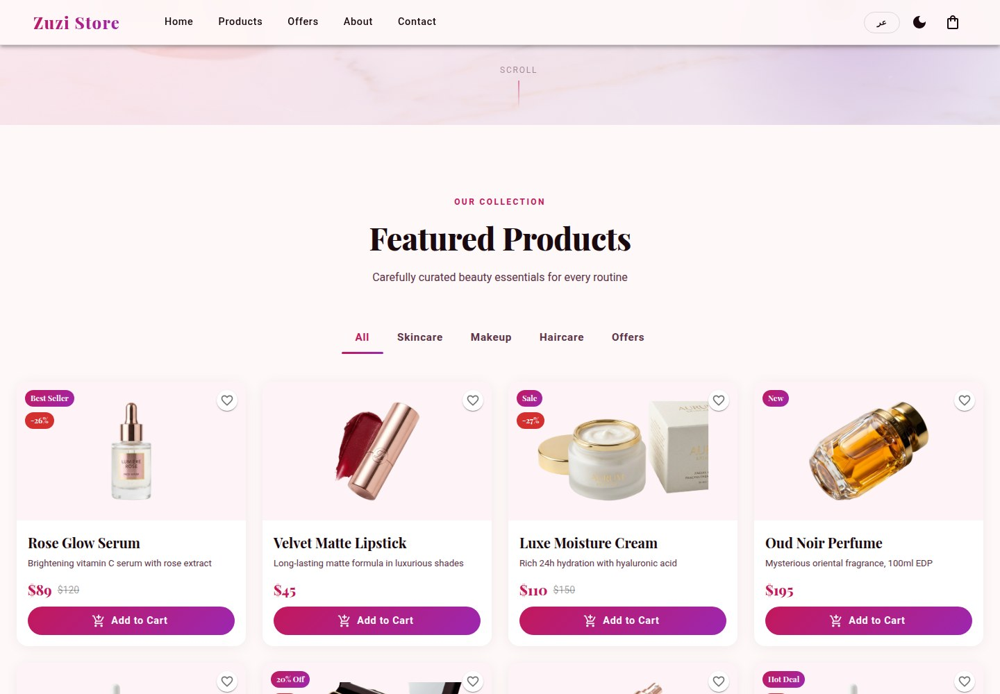
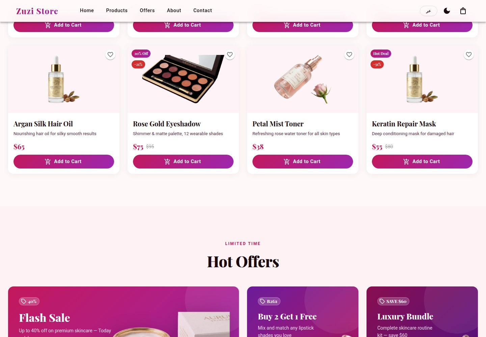
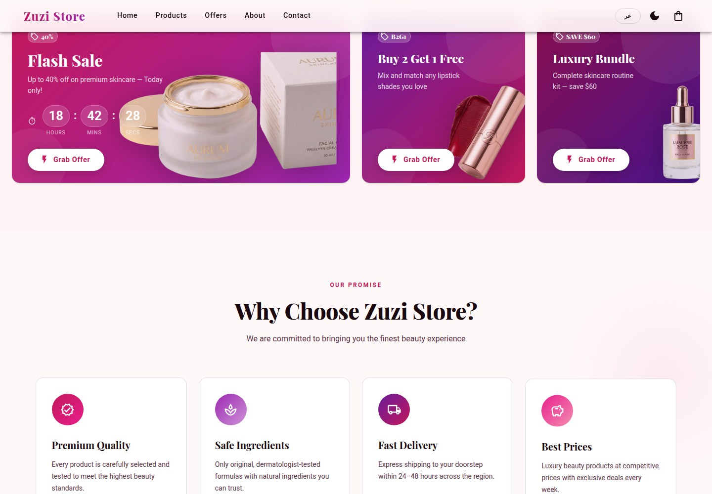
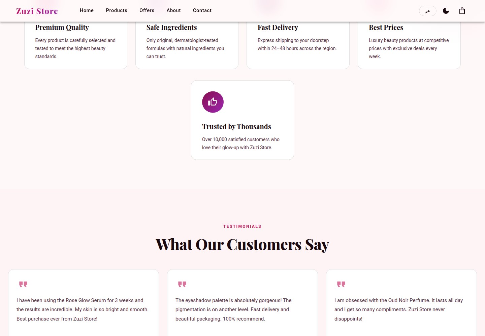
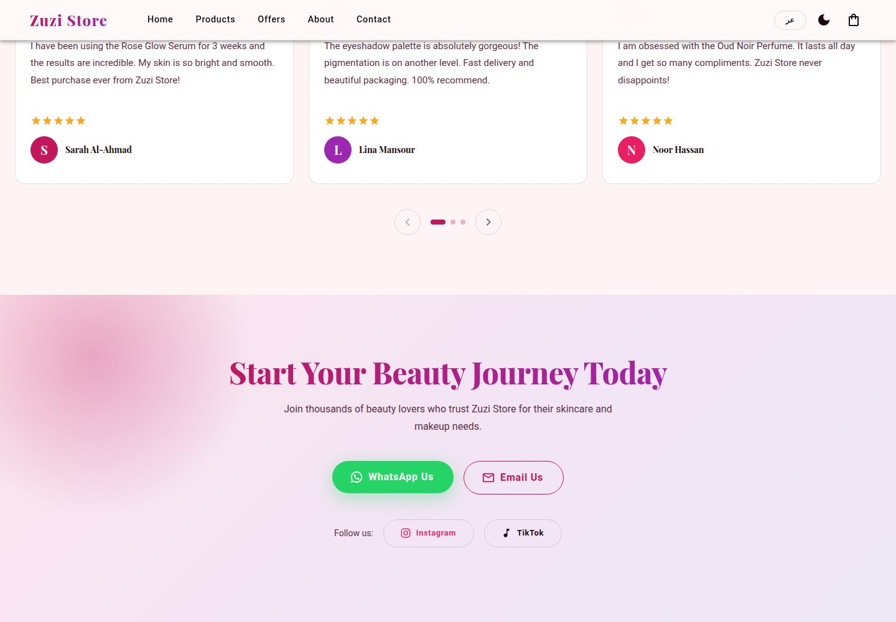
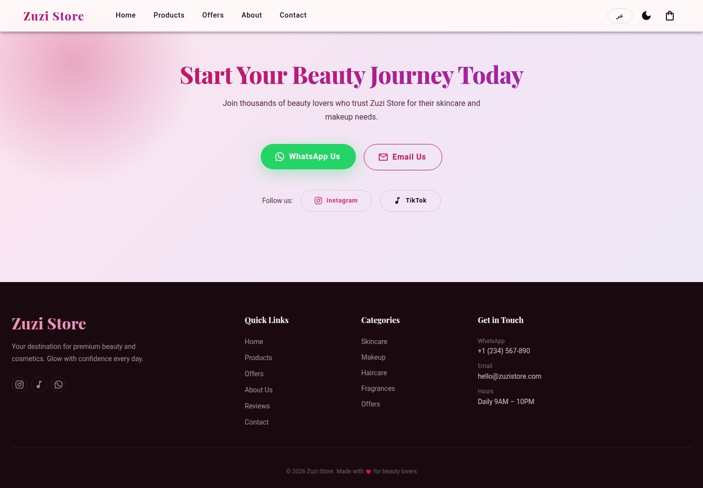
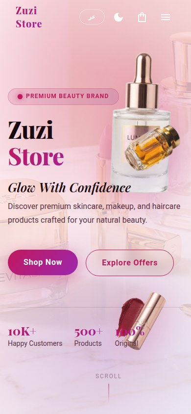
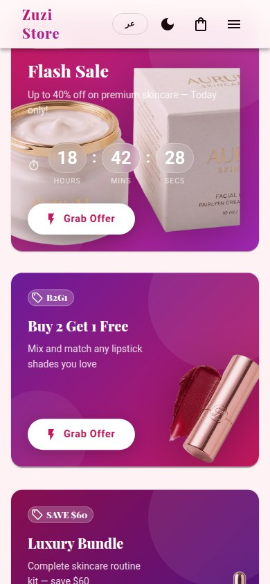
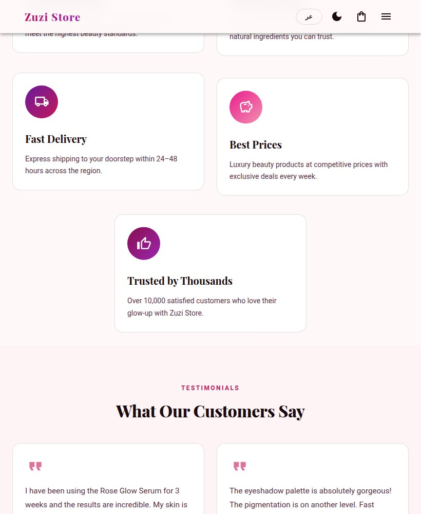
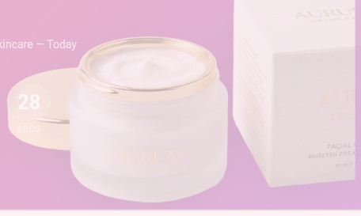

Zuzi Store
Your beauty essentials, softly in the spotlight.

WHAT IT IS
Online beauty and cosmetics retail storefront
Presents a consumer-facing catalog of skincare, makeup, haircare and fragrance products, promotional offers, brand promises and testimonials, with visible purchase and contact calls to action. The displayed content does not establish that ordering or other backend functions work.
This case study documents what the linked website presents. Individual contribution to this project has not been confirmed.
WHAT THE WEBSITE OFFERS
- Single-page storefront with top navigation that scrolls to Home, Products, Offers, About and Contact sections; clicking Products, Offers, About and Contact moved to those homepage sections without changing the URL.
- Featured product grid lists eight items with product images, names, short descriptions and prices; some also show a previous price and sale label.
- Category tabs include All, Skincare, Makeup, Haircare and Offers. Selecting Skincare visibly reduced the grid to Rose Glow Serum, Luxe Moisture Cream and Petal Mist Toner.
- Product cards visibly include Add to Cart buttons, and some include heart-shaped controls; purchase/cart behavior was not verified.
- Hot Offers section presents Flash Sale, Buy 2 Get 1 Free and Luxury Bundle cards with offer copy, promotional values and Grab Offer buttons; a countdown is displayed on Flash Sale.
- Promise section presents five cards: Premium Quality, Safe Ingredients, Fast Delivery, Best Prices and Trusted by Thousands.
- Testimonials section presents three named customer testimonials associated with skincare, eyeshadow and perfume.
- Contact area exposes WhatsApp Us and Email Us actions plus Instagram and TikTok links; footer also displays a phone number, email, opening hours and category links.
VISITOR JOURNEY
Browse the homepage hero and use Shop Now or Explore Offers calls to action (their destinations were not followed).
AUTHENTIC SCREEN CAPTURES · 11
Inside the experience.
Genuine, distinct screen captures supplied for this project. No screenshots have been fabricated or duplicated.









